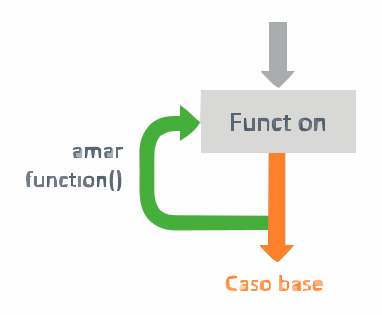

Una función recursiva se llama a sí misma y necesita un caso base que detenga las llamadas; sin él, el programa nunca termina.

static long factorial(int n) {
if (n <= 1) return 1; // caso base
return n * factorial(n - 1); // caso recursivo
}Cuándo usarla
Es natural en problemas con estructura repetida, como recorrer un árbol o calcular Fibonacci. Si el problema se resuelve fácil con un ciclo, la versión iterativa suele ser más eficiente.